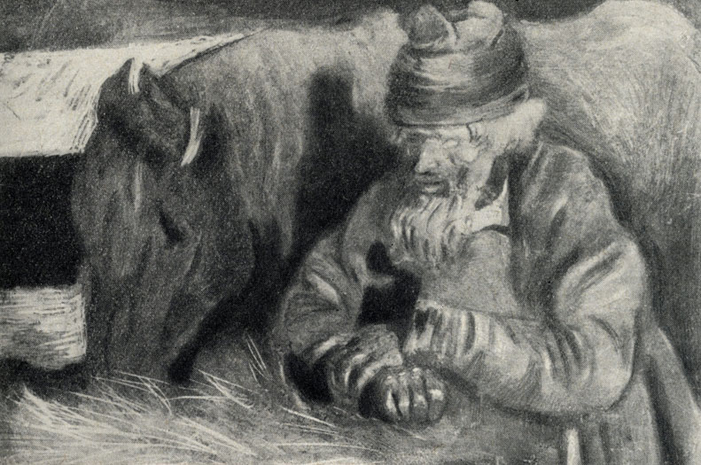

Sobre Tchekhov e as pequenas tragédias cotidianas
Tchekhov, o mestre da prosa curta, tornou-se famoso por conseguir transformar pequenos episódios de pessoas comuns em ilustrações das mais diveraas emoções humanas.

Em “Angústia”, Tchekhov conta a história de Iona, um cocheiro pobre que esperava por passageiros numa noite fria em Moscou. Seu filho morrera recentemente, e o pobre Iona, solitário, não havia “a quem confiar sua tristeza”. Tudo o que sabemos da história de Iona são fragmentos que ele tenta contar aos outros e alguns poucos pensamentos que ele tem. A história toda se passa durante uma noite em que Iona está trabalhando de cocheiro. Tchekhov não nos narra a doença do filho de Iona, as angústias do pai, as idas ao hospital, a notícia da morte, o enterro, o luto… vemos apenas Iona e seu cavalinho sob a neve numa noite escura, próximos a uma praça, esperando passageiros.
Com o coração pesado, Iona tenta contar ao primeiro passageiro sobre sua tragédia pessoal:
“- Pois é, meu senhor, assim é… perdi um filho esta semana…”
Mas percebe que o passageiro não lhe dá atenção. Na rua as pessoas trombam na carruagem de Iona e o xingam; o passageiro pede para Iona ir mais rápido. Chegando ao destino, Iona fica novamente parado em sua boleia, esperando, vendo as horas passar sob a neve…
Por fim, um grupo de bêbados (dentre eles um corcunda) sai de um bar e solicita uma viagem a Iona, pagando uma miséria. Ele aceita, pois é melhor do que nada. Os bêbados se xingam, brigam, caçoam do chapeu do cocheiro, dão-lhe tapas para ir mais rápido. Iona, em dado momento, tenta lhes contar:
“– Esta semana… assim, perdi meu filho!
– Todos vamos morrer. – suspira o corcunda, enxugando os lábios, após um acesso de tosse. – Bem, bate nele, bate nele! Minha gente, decididamente, não posso continuar andando assim! Esta corrida não acaba mais?
E Iona volta-se, para contar como lhe morreu o filho, mas, nesse momento, o corcunda solta um suspiro de alívio e declara que, graças a Deus, chegaram ao destino.
Iona está novamente só e, de novo, o silêncio desce sobre ele… A angústia que amainara por algum tempo torna a aparecer, inflando-lhe o peito com redobrada força. Os olhos de Iona correm, inquietos e sofredores, pela multidão que se agita de ambos os lados da rua: não haverá, entre esses milhares de pessoas, uma ao menos que possa ouvi-lo? Mas a multidão corre, sem reparar nele, nem na sua angústia… Uma angústia imensa, que não conhece fronteiras. Dá a impressão de que, se o peito de Iona estourasse e dele fluísse para fora aquela angústia, daria para inundar o mundo e, no entanto, não se pode vê-la. Conseguiu caber numa casca tão insignificante, que não se pode percebê-la mesmo de dia, com muita luz…”
Iona resolve ir para casa. Seu cavalinho trota ligeiro.
Uma hora e meia depois, numa casa que dividia com outros cocheiros, Iona está sentado ao lado do fogão sujo. Há gente roncando por todos os lados; o ar é abafado, sufocante… Um cocheiro acorda para beber água, Iona tenta puxar conversa mas o homem logo volta a dormir.
“É preciso contar como o filho adoeceu, como padeceu, o que disse antes de morrer e como morreu… É preciso descrever o enterro e a ida ao hospital, para buscar a roupa do defunto. Na aldeia, ficou a filha Aníssia… É preciso falar sobre ela também… De quantas coisas mais poderia falar agora? O ouvinte deve soltar exclamações, suspirar, lamentar… E é ainda melhor falar com mulheres. São umas bobas, mas desandam a chorar depois de duas palavras.”
Iona decide ir ver seu cavalinho. “Iona pensa sobre a aveia, o feno, o tempo… Estando sozinho, não pode pensar no filho… Pode-se falar sobre ele com alguém, mas pensar nele sozinho, desenhar mentalmente sua imagem, dá um medo insuportável…
– Está mastigando? – pergunta Iona ao cavalo, vendo seus olhos brilhantes. – Ora, mastiga, mastiga… Se não ganhamos para a aveia, vamos comer feno… Sim… Já estou velho para trabalhar de cocheiro… O filho é que devia trabalhar, não eu… Era um cocheiro de verdade… Só faltou viver mais…
Iona permanece algum tempo em silêncio e prossegue:
– Assim é, irmão, minha egüinha… Não existe mais Kuzmá Iônitch… Foi-se para o outro mundo… Morreu assim, por nada… Agora, vamos dizer, você tem um potrinho, que é teu filho… E, de repente, vamos dizer, esse mesmo potrinho vai para o outro mundo… Dá pena, não é verdade?
O cavalinho vai mastigando, escuta e sopra na mão de seu amo… Iona anima-se e conta-lhe tudo…”
Tudo o que sabemos da história de Iona são fragmentos que ele tenta contar aos outros e alguns poucos pensamentos que ele tem. Tchekhov não nos narra a doença do filho de Iona, as angústias do pai, as idas ao hospital, a notícia da morte, o enterro, o luto… vemos apenas Iona e seu cavalinho sob a neve numa noite escura, próximos a uma praça, esperando passageiros; vemos Iona tentando esvaziar o coração e sendo desprezado, sentimos a indeferença dos outros ante morte de seu filho, e o vemos seguindo solitário até chegar em casa… por fim, o único que ouviu Iona foi seu cavalinho.
“– Assim é, irmão, minha egüinha… Não existe mais Kuzmá Iônitch… Foi-se para o outro mundo… Morreu assim, por nada… Agora, vamos dizer, você tem um potrinho, que é teu filho… E, de repente, vamos dizer, esse mesmo potrinho vai para o outro mundo… Dá pena, não é verdade?”
É possível imaginar o velho Iona conversando com seu cavalinho numa noite escura, sob a neve, ao lado da casinha mal iluminada. Um homem sozinho no mundo, cujo único ouvinte sobre a tristeza que lhe devorava era o próprio cavalo. O conto acaba ali: Iona em seu monólogo. Não sabemos o que acontece depois. Tchekhov só quis colocar a lupa na angústia de um homem desprezado.
Parado feito uma estátua junto a seu cavalo, Iona passou horas até que saíram diversas pessoas de um teatro próximo. Um deles, um militar bem-aprumado, aproximou-se de Iona e solicitou uma viagem. A rua começa a encher de pessoas. Iona move as rédeas e a neve cai de sua roupa em camadas. O cavalinho estica o pescoço e começa a andar, indeciso.
Na rua, as pessoas xingam e trombam na carruagem de Iona; alguns se voltam para fazer gestos. O militar reclama das pessoas na rua, e Iona cochicha algo ininteligível, e depois repete:
- Pois é, meu senhor, assim é… perdi um filho esta semana…
– Hum!… De que foi que morreu?
Iona volta todo o corpo na direção do passageiro e diz:
– Quem é que pode saber! Acho que foi de febre… Passou três dias no hospital e morreu… Deus quis.
Outra pessoa xinga a carruagem nas ruas.
– Anda, anda… – diz o passageiro. – Assim, não chegamos nem amanhã. Mais depressa!
A viagem segue, e o passageiro não dá mostras de interesse. O militar desce. Iona para em frente a uma taverna e fica imóvel na boleia. A neve pinta ele e o cavalinho de branco novamente. Passam-se uma hora… outra…
Três jovens bêbados, um deles sendo corcunda, aparecem e pedem uma viagem para a ponte Politzéiski. Oferecem pagar pouco, e Iona aceita pois é melhor do que nada. Depois de brigarem para ver quem ia de pé na carruagem, um deles ri do chapéu de Iona.
– Hi-i… hi-i… – ri Iona. – Assim é…
Atrás, os bêbados brigam, xingam, mentem e ficam pedindo para Iona ir mais rápido. Após um tempo, ficam em silêncio e Iona olha pra trás e balbucia:
– Esta semana… assim, perdi meu filho!
– Todos vamos morrer. – suspira o corcunda, enxugando os lábios, após um acesso de tosse. – Bem, bate nele, bate nele! Minha gente, decididamente, não posso continuar andando assim! Esta corrida não acaba mais?
E Iona ouve, mais que sente, os sons de uma pancada no pescoço.
– Hi-i… – ri ele. – Senhores alegres… que Deus lhes dê saúde!
– Cocheiro, você é casado? – pergunta um dos compridos.
– Eu? Hi-i… que senhores alegres! Agora, só tenho uma mulher, a terra fria… Hi-ho-ho… O túmulo, quer dizer!… Meu filho morreu, e eu continuo vivo… Coisa esquisita, a morte errou de porta… Em vez de vir me buscar, foi procurar o filho…
E Iona volta-se, para contar como lhe morreu o filho, mas, nesse momento, o corcunda solta um suspiro de alívio e declara que, graças a Deus, chegaram ao destino.
Iona está novamente só e, de novo, o silêncio desce sobre ele… A angústia que amainara por algum tempo torna a aparecer, inflando-lhe o peito com redobrada força. Os olhos de Iona correm, inquietos e sofredores, pela multidão que se agita de ambos os lados da rua: não haverá, entre esses milhares de pessoas, uma ao menos que possa ouvi-lo? Mas a multidão corre, sem reparar nele, nem na sua angústia… Uma angústia imensa, que não conhece fronteiras. Dá a impressão de que, se o peito de Iona estourasse e dele fluísse para fora aquela angústia, daria para inundar o mundo e, no entanto, não se pode vê-la. Conseguiu caber numa casca tão insignificante, que não se pode percebê-la mesmo de dia, com muita luz…
“Para casa”, pensa, “para casa”.
E o cavalinho, como se tivesse compreendido seu pensamento, começa a trotar ligeiramente. Uma hora e meia depois, Iona está sentado junto ao fogão grande e sujo. Há gente roncando em cima do fogão, no chão e sobre os bancos. O ar é abafado, sufocante… Iona olha para os que dormem, coça a cabeça e lamenta haver voltado tão cedo para casa…
Num dos cantos, um jovem cocheiro sonolento se levanta pra tomar água.
– Pois é, irmão, e eu perdi um filho… Está ouvindo? Foi esta semana, no hospital… Que coisa!
Iona procura ver o efeito que causaram suas palavras, mas não vê nada. O jovem se cobriu até a cabeça e já está dormindo. O velho suspira e se coça… Assim como o jovem quis beber, assim ele quer falar. Vai fazer uma semana que lhe morreu o filho e ele ainda não conversou direito com alguém sobre aquilo… É preciso falar com método, lentamente…
É preciso contar como o filho adoeceu, como padeceu, o que disse antes de morrer e como morreu… É preciso descrever o enterro e a ida ao hospital, para buscar a roupa do defunto. Na aldeia, ficou a filha Aníssia… É preciso falar sobre ela também… De quantas coisas mais poderia falar agora? O ouvinte deve soltar exclamações, suspirar, lamentar… E é ainda melhor falar com mulheres. São umas bobas, mas desandam a chorar depois de duas palavras.
“É bom ir ver o cavalo”, pensa Iona. “Sempre há tempo para dormir…”
Veste-se e vai para a cocheira, onde está seu cavalo. Iona pensa sobre a aveia, o feno, o tempo… Estando sozinho, não pode pensar no filho… Pode-se falar sobre ele com alguém, mas pensar nele sozinho, desenhar mentalmente sua imagem, dá um medo insuportável…
Está mastigando? – pergunta Iona ao cavalo, vendo seus olhos brilhantes. – Ora, mastiga, mastiga… Se não ganhamos para a aveia, vamos comer feno… Sim… Já estou velho para trabalhar de cocheiro… O filho é que devia trabalhar, não eu… Era um cocheiro de verdade… Só faltou viver mais…
Iona permanece algum tempo em silêncio e prossegue:
– Assim é, irmão, minha egüinha… Não existe mais Kuzmá Iônitch… Foi-se para o outro mundo… Morreu assim, por nada… Agora, vamos dizer, você tem um potrinho, que é teu filho… E, de repente, vamos dizer, esse mesmo potrinho vai para o outro mundo… Dá pena, não é verdade?
O cavalinho vai mastigando, escuta e sopra na mão de seu amo… Iona anima-se e conta-lhe tudo…
Obs: deixei em itálico os trechos retirados diretamente do livro.